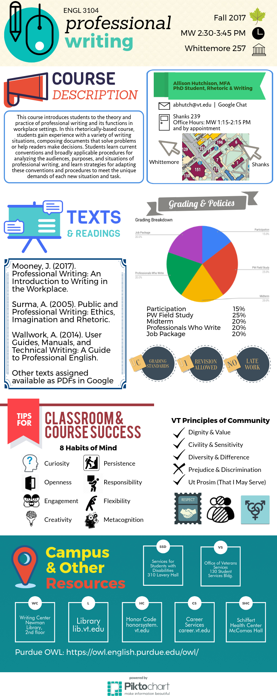

Teaching Philosophy
& Student Projects
Jump to page contents:
- Student Projects
- Teaching Philosophy
- Teaching Feedback
Student Projects
So many students in my classes create awesome projects that I want to share. Here are a few, and please reshare widely!
Cornell University, College of Engineering
Campus Sustainability Projects
College of Engineering Projects
Job Application & Resources Projects
- Job Ad User Tool (JAUT): An interactive website by Team PopTart and Team 5 (some members of these teams will be presenting JAUT at the IEEE ProComm conference in Ireland in July 2022)
- Finding Your Survey Platform
- GitHub Hosted Digital Portfolio Guide GitHub Pages website by CornHTML.Note:This team wanted this project to be open source, so a team could develop this further.
- Job Recruitment Tools for Undergraduate Students by Team Job Re-crew-tment (website aimed at Cornell engineering students going on the job market)
- Internship and Job Resources For Undergraduate Engineering Students website by Professional Development Kickstarters
Software and Coding Projects
- How to Hack WiFi Networks; Learning Password Security
- Integrating Cross-Disciplinary Tools website by Team 7 on using Mathematica and pandas, as well as integrating the two
- Getting Started with Git Google Doc by the Git Guide Guys
- Implementing Best Coding Practices by Team 5
- Getting Started with Jupyter Notebook and Command Line Interface
Project Management Guides
- How to Use Project Development Tools in a Remote Coding Team GitBook by the CS Boys (aimed at students in CS 3110 and 3152)
- Onboarding Remotely for Software Engineers Google Doc by Team 3
- Project Management Tool Finder wbsite by Agile4Dayz
- Getting Started with Slack website by Super Slack
- Managing Workflow with Microsoft Teams GitBook by DevOps Manual
- Remote Communications Guide for Project Team Leaders by Remote Communications Team (focuses on an array of tools and suggestions, not Google Teams or Microsoft Teams)
- Best Practices For Remote (Distributed) Teams at Work Handbook by Team Aqua (PDF)
Virginia Tech, Professional & Technical Writing Program
- Science Writing students collaboratively created a website highlighting the concepts and skills they felt other science communicators should know. I recoded this website using
Bootstrap and GitHub to eradicate advertisements and include more of the students' design requests that couldn't be accomplished with WordPress (such as an accordion feature on the Spotlight Interviews page).
- Science Writing students collaborated with Virginia Tech's Center for Communicating Science and the Fralin Life Science Institute to interview and write science stories about
STEM graduate students who are white women and people of color.
Teaching Philosophy
My pedagogical axiom for learning is, “If we're not having fun, we're not doing it right.” This isn’t to say that my teaching style encourages a wanton free-for-all; rather, I mean to invoke what a former professor of mine
called “serious fun.” If both students and instructor are engaged in a thoughtful mental exercise accompanied by the practice of reading, interacting with, and creating texts, the fun results from the nexus between these activities.
I define text through a lens of semiotics as anything intended to communicate meaning, whether that text is written, visual, oral, or aural. It is in the interplay of intellect and praxis where I believe that the most
effective and provocative learning occurs. Therefore, I am committed to scaffolding students’ critical thinking by designing curricula that combine theories and practices of rhetoric, writing, and technology to interrogate
their existing notions of each.

As a teacher-scholar interested in the both technical communication and writing center studies, I value two shared pedagogies between these fields: collaboration and multiliteracies. First, a pedagogy of collaboration
is based upon a theory of social cognition where humans learn by interacting, solving problems, and questioning what we know. Both the writing center and technical communication fields offer important contributions to how humans
work together in ways mediated by texts. In writing centers, collaboration typically takes place between a writer and a tutor who negotiate meaning-making, but the writer ultimately retains ownership of the text. In technical
communication, collaboration happens among many participants and authorship is often collective instead of individual. Exposing students to both kinds of collaboration prepares them to democratically produce texts, knowledge,
and technologies. In my courses, students have worked collaboratively by conducting peer reviews on one another’s individual assignments and by collectively developing a website.
Second, I enact a pedagogy of multiliteracies by drawing upon a critical theory of technology. I understand multiliteracies to be predicated on the notion that technology is not merely a benign tool, but one imbued with human
intentions and values that prompt rhetorical production. Accordingly, in my courses, students use technology to access texts, critique their own and others’ use of technologies and texts, and finally create texts with a rhetorical
understanding of technology. For example, in my Science Writing course, students read science stories from online publications, examined the stories for written and visual rhetorical techniques, and then wrote their own stories
with online publication in mind. Each student’s story is available on the website of the Virginia Tech Center for Communicating Science.
I treat writing as beginnings to knowledge-making. Enacting functional, critical, and rhetorical literacies is a beginning, a threshold event (Carter), which poises students to treat technology differently than they have
previously. For instance, many of my students use the internet and social media, but when I assign an infographic or an instructional GIF project to exercise students’ knowledge of multiliteracies, I find that they are using
various software or digital interfaces for the first time. Once they wrestle with technology to produce a digital text, they begin to understand how an interface’s affordances and drawbacks affect their digital design. That
process of discovering how to use various software applications for textual construction and information design is generative for my students, and it encourages them to apply their newfound skills in other knowledge-making
endeavors. After analyzing my syllabus infographic, students in my Professional Writing course then decided to employ the same genre for another assignment in which they needed to present a summary of the previous class period.
I view rhetoric as situational and accordingly challenge students to use what they learn from course readings and activities to determine the most appropriate medium for fashioning and delivering a text. In my Professional
Writing course, one student chose to design a poster because her intended audience was elementary school children and she envisioned it hanging in their classroom. Through this practice, my students learn to regard rhetoric
as situational: the medium that works for one audience does not work as well for another because their situations differ. Another student in the same class created a website intended to reach middle schoolers, who she reasoned
were more likely to access the internet when looking for ways to counteract bullying. By pressing students to map out their exigence, audience, and constraints in assignments exercising multiliteracies, my goal is to equip
them to respond critically and rhetorically in future situations where making texts is exigent.
References
Carter, M. (2003).
Where Writing Begins: A Postmodern Reconstruction. Carbondale, IL: Southern Illinois University Press.
Selber, S. A. (2004).
Multiliteracies for a Digital Age. Carbondale, IL: Southern Illinois University Press.